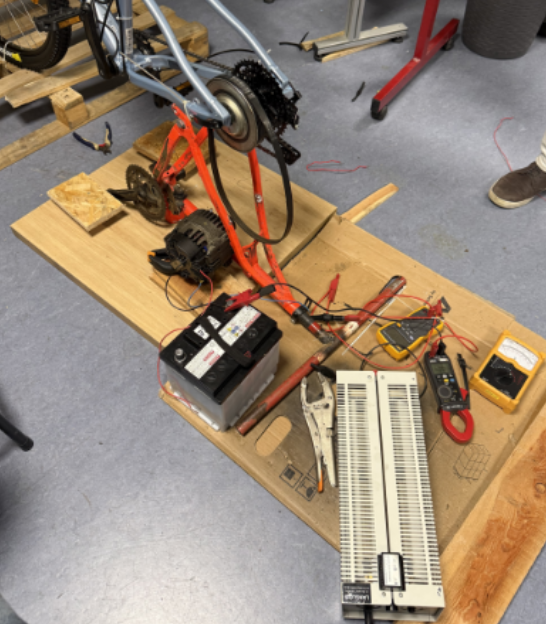
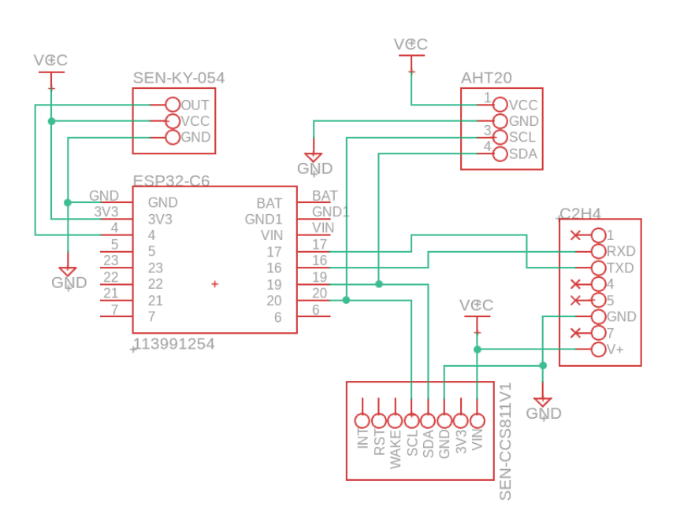
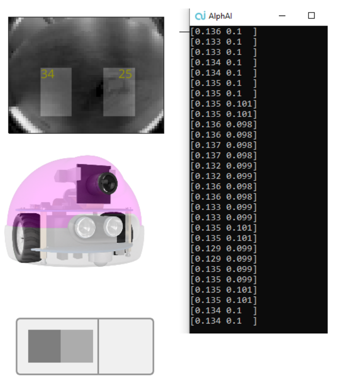
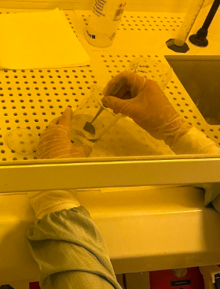
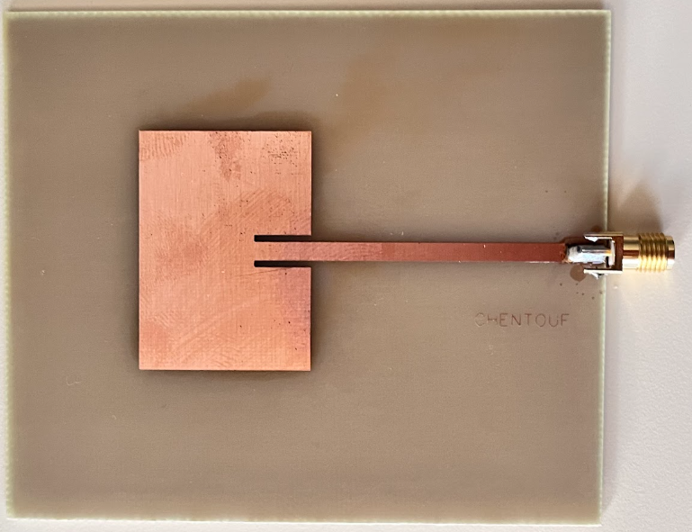

Passionné par la conception de systèmes complexes, de la modélisation mathématique jusqu'à la microfabrication en salle blanche et au déploiement d'intelligences artificielles embarquées.
Étude et contrôle d'une valve papillon d'admission automobile (Continental VDO). Modélisation mathématique avancée (modèle d'état) intégrant les non-linéarités complexes telles que les frottements (Coulomb/visqueux) et l'asymétrie du ressort de rappel.
Participation à des projets d'envergure (Hôpitaux, Parkings, Cliniques vétérinaires) en assurant la conception, le dimensionnement et la conformité normative des installations électriques.

Système Électromécanique & IoT
Transformation d'un vélo classique en simulateur d'entraînement intelligent. Le système adapte automatiquement la résistance de pédalage en fonction du dénivelé d'un fichier de parcours GPX réel.

Acquisition de données & Basse Consommation
Conception d'un système de télémétrie sans fil ultra-basse consommation (deep-sleep) pour la surveillance des conditions de stockage de pommes de terre sur des milliers de mètres carrés.

Machine Learning & Vision
Programmation d'un robot "AlphAI" pour la navigation autonome sur un circuit complexe par analyse d'images embarquée et télémétrie ultrason.

Salle Blanche IEMN - Nanotechnologies
Réalisation complète du procédé de fabrication d'un composant semi-conducteur sur un substrat d'Arséniure de Gallium (GaAs) et analyse de ses propriétés électriques.

Hyperfréquences & Électromagnétisme
Dimensionnement, simulation et fabrication de composants hyperfréquences passifs sur substrat FR-4 pour la bande ISM (Wi-Fi).